FEYN CALC SYMBOL
FeynAmpDenominator
FeynAmpDenominator[...] represents the inverse denominators of the propagators, i.e. FeynAmpDenominator[x] is 1/x. Different propagator denominators are represented using special heads such as PropagatorDenominator, StandardPropagatorDenominator, CartesianPropagatorDenominator etc.
Examplesopen all
Basic Examples (1)
| In[4]:= |
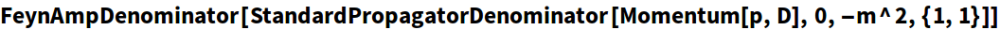
|
| Out[4]= |
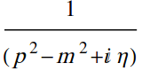
|
| In[5]:= |
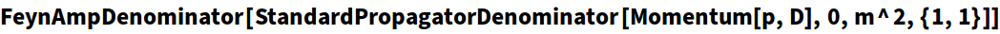
|
| Out[5]= |
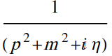
|
| In[6]:= |
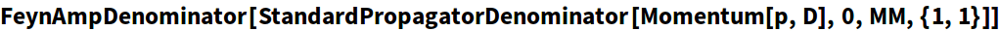
|
| Out[6]= |
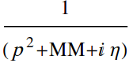
|
| In[7]:= |
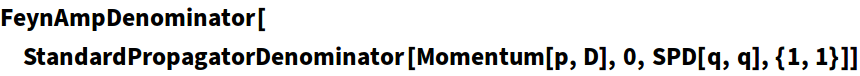
|
| Out[7]= |
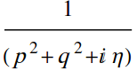
|
| In[8]:= |
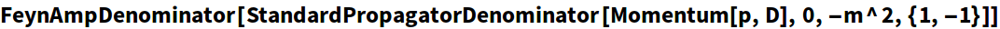
|
| Out[8]= |
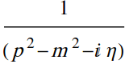
|
| In[9]:= |
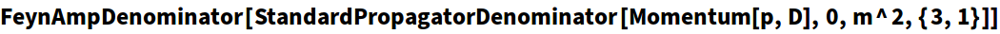
|
| Out[9]= |
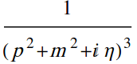
|
| In[10]:= |
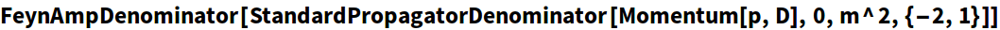
|
| Out[10]= |
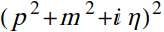
|
| In[11]:= | 
|
| Out[11]= |
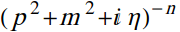
|
| In[12]:= | 
|
| Out[12]= |
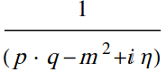
|
| In[13]:= |
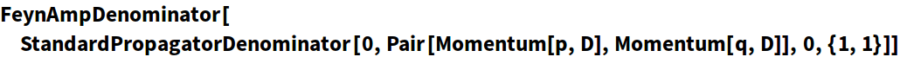
|
| Out[13]= |
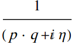
|
| In[14]:= |
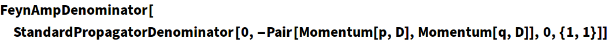
|
| Out[14]= |
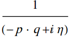
|
| In[15]:= |
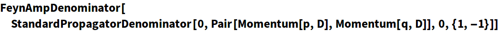
|
| Out[15]= |
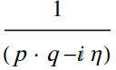
|
| In[17]:= |
Out[17]//StandardForm= | |
| 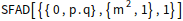 | |
| In[18]:= |
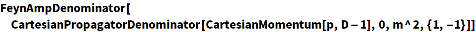
|
| Out[18]= |
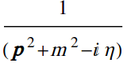
|
| In[19]:= |
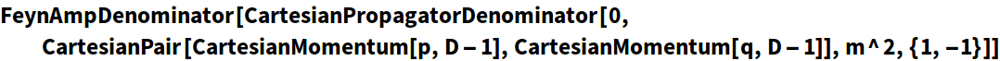
|
| Out[19]= |
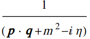
|
| In[20]:= |
Out[20]//StandardForm= | |
| 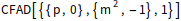 | |
| In[21]:= |
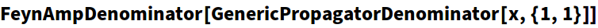
|
| Out[21]= |
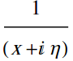
|
| In[22]:= |
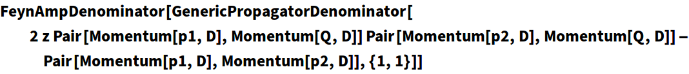
|
| Out[22]= |
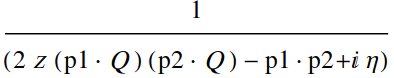
|
| In[23]:= |
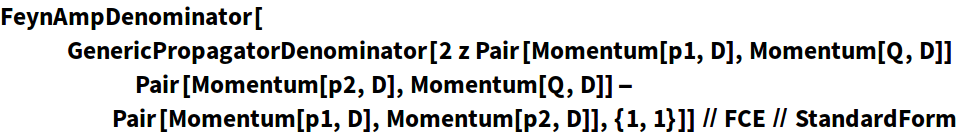
|
Out[23]//StandardForm= | |
| 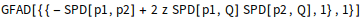 | |